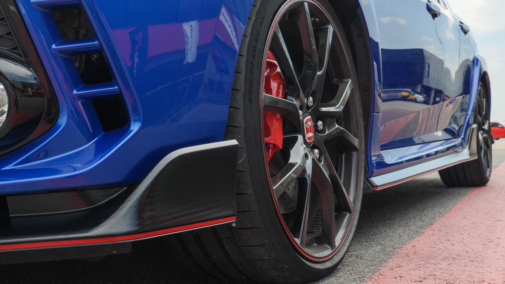
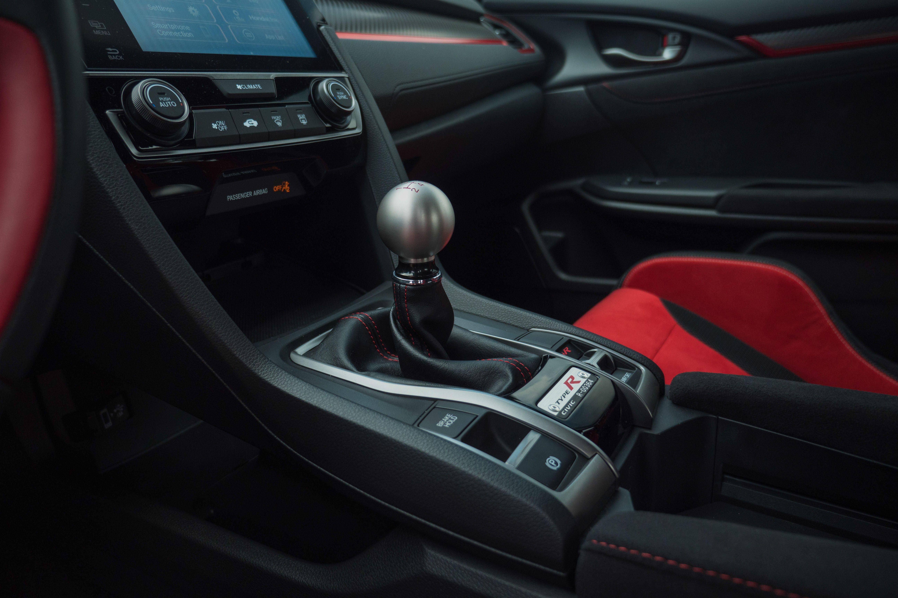

This, dear readers, has been a long time coming. The 2017 Honda Civic Type R is finally here.
Honda's been making lightweight, race-ready Type R versions of its cars for about 25 years now,
with the Civic first getting the nod in 1997. Those cars have shown up in Japan, Europe,
Australia and... basically everywhere but the US.
Finally, finally, that's changing. For the 10th-generation Civic, Honda decided to throw America
a bone -- a 306-horsepower, turbocharged bone. It's the fastest Civic ever, the fastest
production front-wheel drive car on the planet, the most powerful Honda ever released in the US
and it's really, really good.

R is for racing and so when the humble, sixth-gen Civic received the "Type R" nameplate back
in 1997, it seemed like a bit of a curiosity. But as any fan of Japan's
Best Motoring program will tell you, or indeed anyone who's ever obsessed over Gran Turismo,
the Civic Type R has always been something worth respecting. And, for those of us in the US,
something worth coveting.
For this 10th-generation Civic, and fifth iteration of the Civic Type R, Honda changed the
rules somewhat. The biggest shift? It's a four-door hatchback. While the eighth-generation Civic
Type R was a four-door sedan, the car has traditionally been a two-door hatch. The extra doors
will be controversial to some, but the platform is important. That the 10th-generation Civic is
largely the same car globally meant Honda could practically clear the necessary regulatory
hurdles to bring this thing to the States. And boy are we glad they did.
This new car sports a refined version of the 2.0-liter, turbocharged inline-four motor that
drove the previous Type R, too. Yes, it's turbo'd and so it isn't quite the screamer of yore,
but it still has i-VTEC, so you can at least still make all the Fast & Furious jokes you want.
That turbo means a very healthy 295 pound-feet of torque at just 2,500 RPM and a maximum output
of 306 horsepower. (That figure is slightly lower than the the car is rated for elsewhere,
thanks largely to higher octane fuel in the rest of the world.) It'll also do 28 mpg on the
highway, 25 combined. That turbo blows air through a front-mount intercooler and the engine
spins a slick-shifting, close-ratio six-speed manual transmission. For the first time, Honda's
outfitted the car with an auto-blip downshift system. Haven't quite mastered those toe-heel
downshifts? The Type R has you covered.

While cars like the Subaru WRX STI, Ford Focus RS and Volkswagen Golf R offer plenty of thrills
and performance, when it comes to offering a compelling mixture of race-focused performance and
day-to-day usability, the Type R is looking tough to beat. And, at $33,900, it's cheaper than
the rest, too -- at least, it should be. Dealers are certainly adding a bit more to that figure.
And granted, the other cars all feature all-wheel drive, and the complete lack of active safety
niceties like adaptive cruise and lane-departure assist on the Civic is disappointing, but
nobody's perfect.

The 2017 Civic Type R is a remarkable car and a new benchmark. Yes, dear readers, it was
certainly worth the wait.